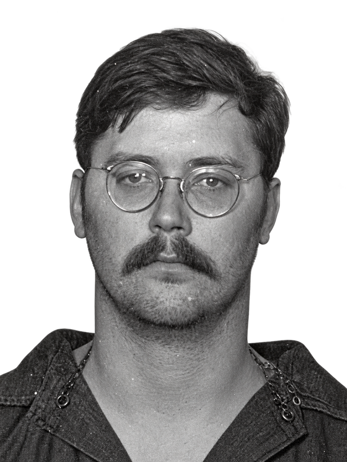
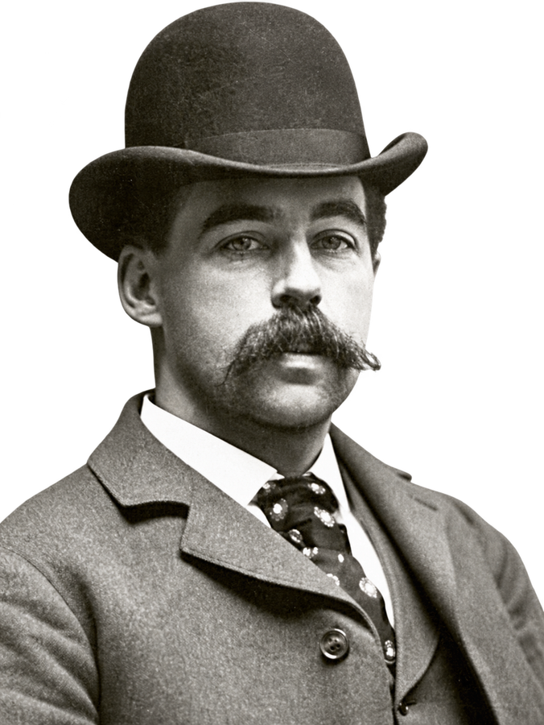

Reconstruir
Ordena la cronología y distingue las víctimas conocidas, las confesiones y las condenas.
Comprender los hechos.
Analizar la conducta. Estudiar la evidencia.


Este archivo organiza los casos que analizamos en Investigación Criminal: Perfil e Informe Criminológico para facilitar el estudio a todos los estudiantes.
Cada expediente reúne trayectoria, victimología, modus operandi, investigación y propuestas de análisis. Las descripciones de violencia son directas y tienen una finalidad criminológica, con respeto a las víctimas.
La ampliación documental utiliza fuentes externas citadas. Contrástala con los apuntes y la terminología de clase para preparar el examen. Las interpretaciones se distinguen de los hechos acreditados.
Una misma estructura para leer, relacionar y recordar cada caso.
Ordena la cronología y distingue las víctimas conocidas, las confesiones y las condenas.
Identifica acceso, control, método de muerte, ocultación y conducta posterior.
Compara las hipótesis con las fuentes y comprueba lo aprendido con las preguntas de repaso.